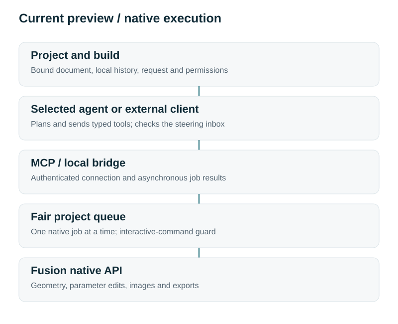
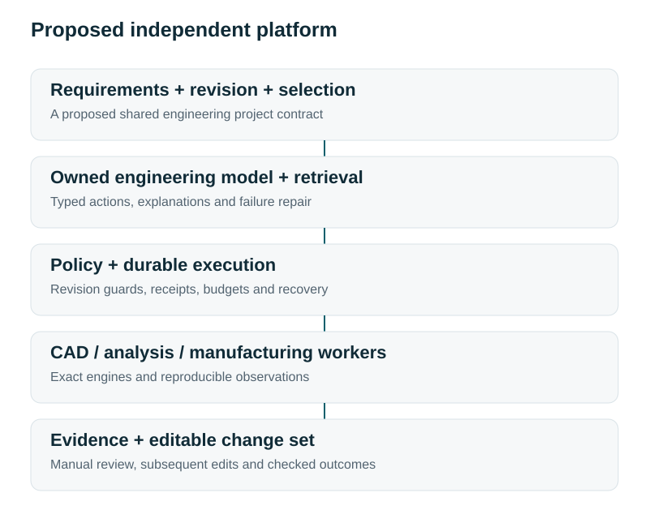

Formivect: conversation connected to engineering work
Personal preview 0.2.0 verified on Windows. Independent platform proposed.
Project intent
Formivect is Harrison B. Goldberg's engineering-software project, begun in September 2026. The current application is a local Fusion add-in with native API execution, CLI/MCP tools, project-bound queues, histories, permissions, viewport images and selected-model agent runs. Its purpose is to keep an agent connected to the actual editable design and the user's ongoing work.
Current architecture
Requests belong to a project and build. An explicit binding targets an open Fusion document. The local bridge validates tool inputs, queues a native operation and exposes its eventual result. Jobs wait for active interactive commands; native changes serialize and the prior document is restored when possible. Agents can plan concurrently, but the preview does not create independent headless Fusion instances.

Working evidence
The September 10 Windows record includes 37 automated checks, 17 MCP tools, 11 extended native checks, two-design geometry/viewport/export tests and actual Codex runs. A later scoped advanced-Python workflow produced 12 native solids, 36 features and 36 sketches, native export/reopen verification and 12 STL exports. Other project tools supplied downstream QA; this is not broad CAD/CAM/simulation parity.
Independent platform ambition
The intended final product owns the engineering workspace, exact project/revision representation, CAD/analysis/manufacturing execution and deployed engineering-model route. Manual and agent edits would share the same command system. Requirements and revision-matched evidence would remain connected to the editable design.

Next stage
Choose a useful recurring workflow and freeze an independently evaluated contract. Build missing typed operations and recovery, establish model baselines, curate permissioned data and evaluate specialization before expanding supported engineering breadth. A mounting-plate change order is a candidate; it is not a selected market or shipped standalone workflow.
AI-assisted workflows supported the creation of this project. My Python work is carried out entirely through AI-assisted workflows using Claude Code and Codex.